Machado
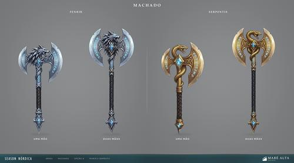
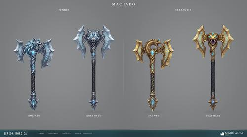
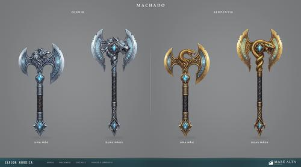
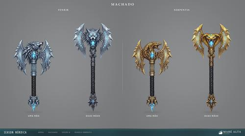
Machado de 1 mão
Machado de 2 mãos
Espada
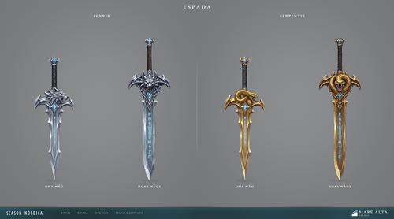
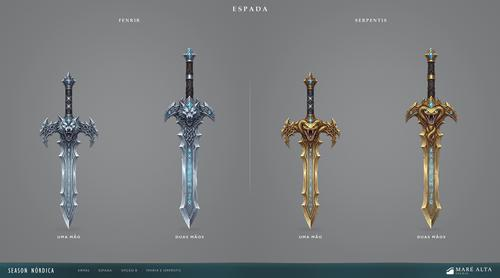
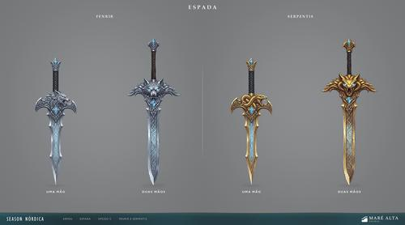
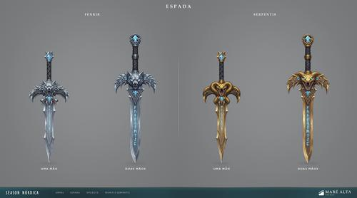
Espada de 1 mão
Espada de 2 mãos
Martelo
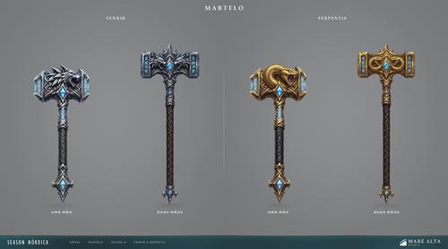
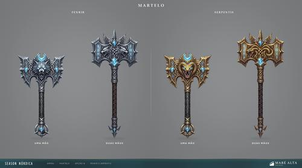
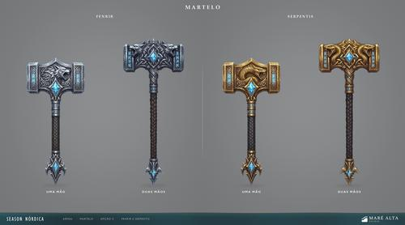
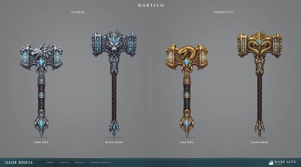
Martelo de 1 mão
Martelo de 2 mãos
Cajados
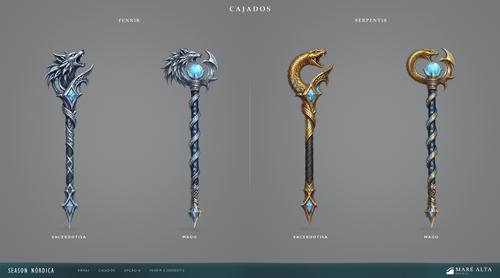
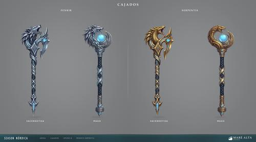
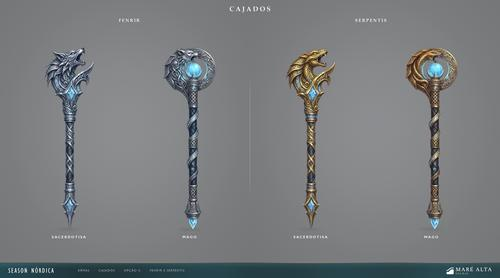
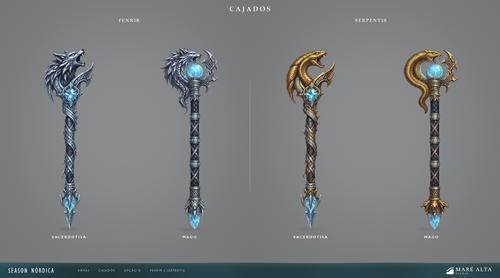
Cajado da Sacerdotisa
Cajado do Mago
Foice
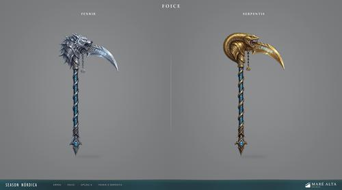
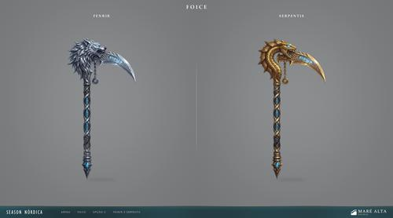
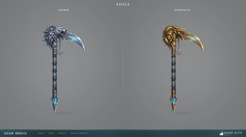
Foice
Lança
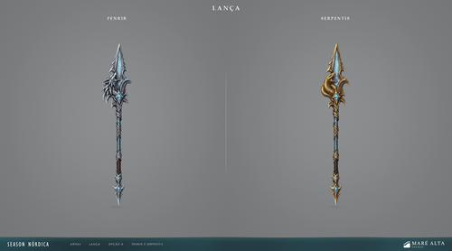
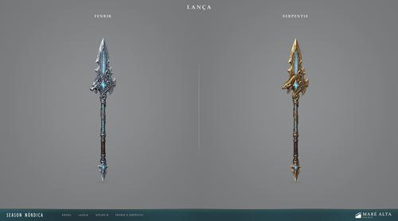
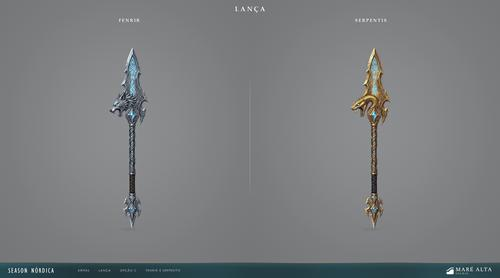
Lança
Arco
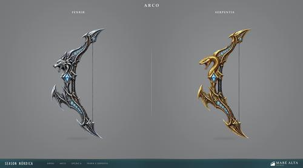
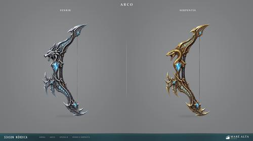
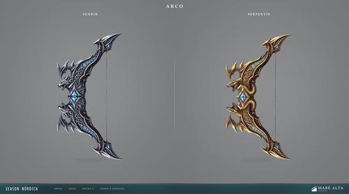
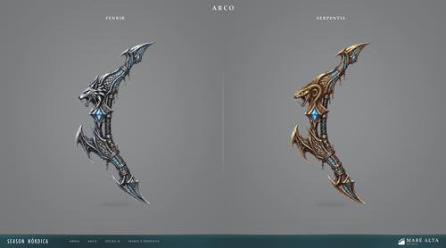
Arco
Garra
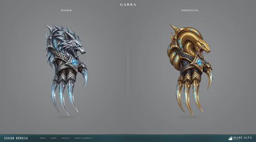
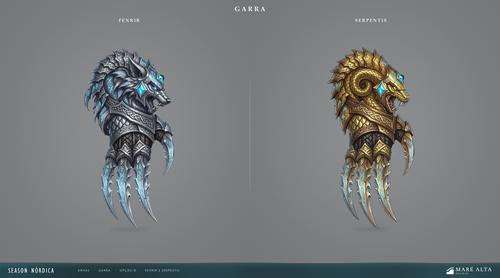
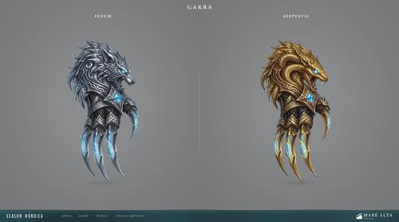
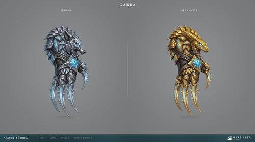
Garra
Adaga
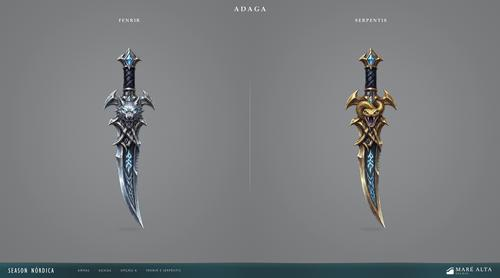
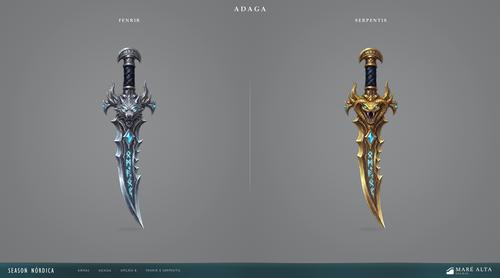
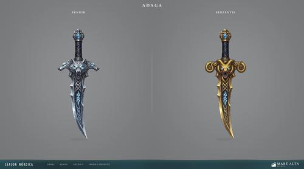
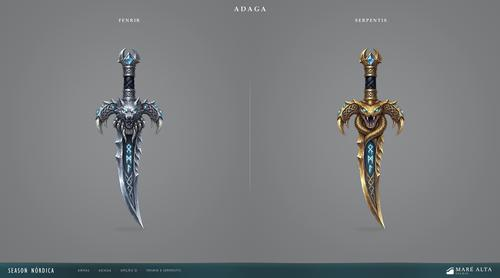
Adaga
Fantasma
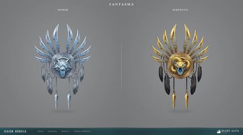
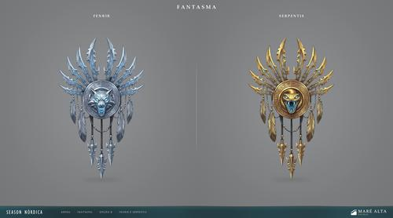
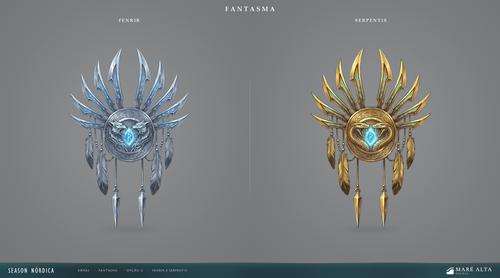
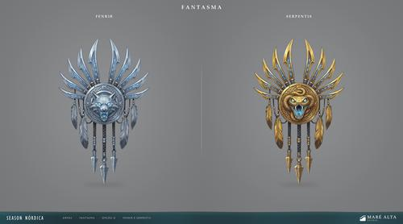
Fantasma
Manopla
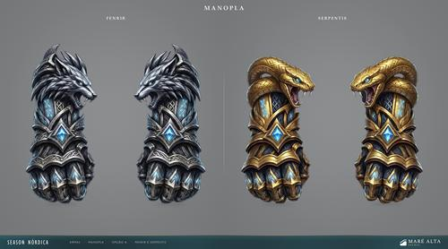
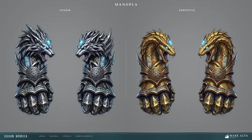
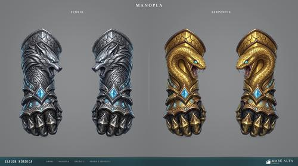
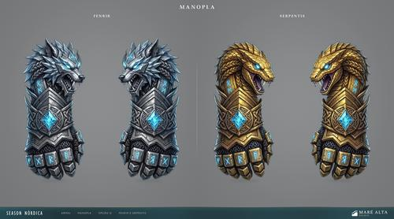
Manopla
Escudo
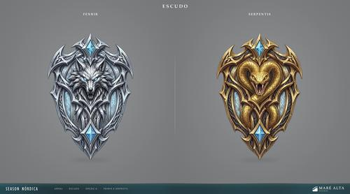
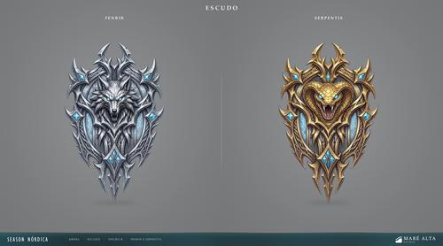
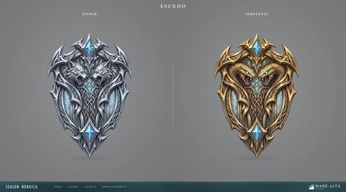
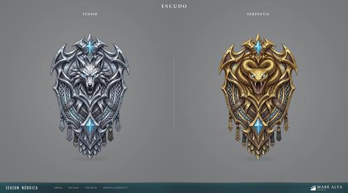
Escudo
Tridente e Chicote
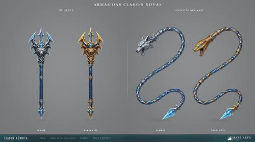
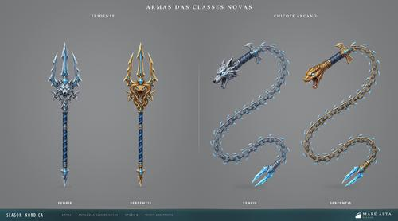
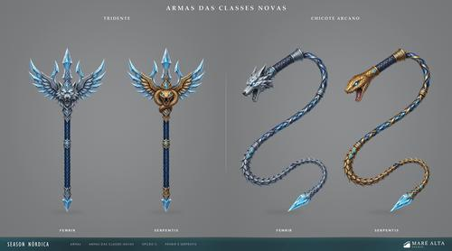
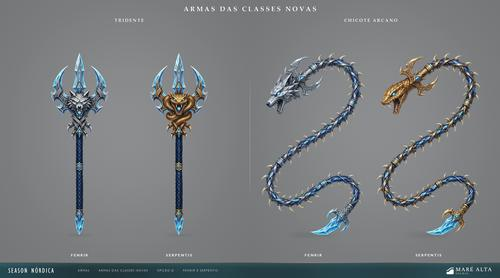